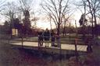
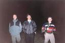
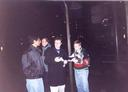
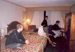
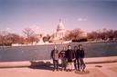

Mihai in Washington DC

January 2002
I traveled (along with several other people) to Washington DC for a MURI meeting (since the WiSA project I work on is sponsored by ONR. A fairly large group from Wisconsin participated in this meeting:
- Professors:
- Somesh Jha (http://www.cs.wisc.edu/~jha)
- Tom Reps (http://www.cs.wisc.edu/~reps)
- Bart Miller (http://www.cs.wisc.edu/~bart)
- Students:
- Alexey Loginov (http://www.cs.wisc.edu/~alexey)
- Vinod Ganapathy (http://www.cs.wisc.edu/~vg)
- Gogul Balakrishnan (http://www.cs.wisc.edu/~bgogul)
- Jon Giffin (http://www.cs.wisc.edu/~giffin)
- me
This was a good occasion to visit Washington DC and the surrounding areas. I have several photos below, in which I appear along with Alexey, Jon, Gogul, and Vinod. We visited both downtown DC (the Washington Mall and landmarks around it) as well as the Great Falls Park on the Potomac (upstream from DC).
Click the thumbnails to see the larger images. Each image is about 1.1 MB, in PNG format, with a resolution of 1024x696 for landscapes, and symmetrically similar for portraits.
|
Photo # 1
Alexey watching me check my email in our hotel room. |
Photo # 2
The waterfall in Great Falls Park. |
Photo # 3
From left to right: Gogul, Vinod, Mihai (me), Jon, Alexey. |
|
Photo # 4
Great Falls Park: where to go next? |
Photo # 5
Great Falls Park: on a bridge over no water. | 
Photo # 6
Great Falls Park: same bridge, same lack of water. |
| 
Photo # 7
From left to right: Jon, Vinod, Alexey |
Photo # 8
DC: the Capitol (the side facing the Mall). |
Photo # 9
DC: the Capitol (the main entrance, which faces away from the Lincoln Memorial). |
| 
Photo # 10
DC: night has fallen, where is the food? | 
Photo # 11
Checking email was a big event for everybody, since email access was limited. |
Photo # 12
DC: in front of the White House. |
|
Photo # 13
DC: in front of the White House. |
Photo # 14
DC: the capitol and the reflecting pool. | 
Photo # 15
DC: the birds were targeting everybody, we stood still for only a second. |
|
Photo # 16
DC: the north side of the White House. |
{kind=link}
{kind=link}
{kind=link}
{kind=link}
{kind=link}
{kind=link}
{kind=link}
{kind=link}
{kind=link}
{kind=link}
{kind=link}
{kind=link}
{kind=link}
{kind=link}
{kind=link}
{kind=link}
Great Falls Park is on the Potomac, close to DC, between
Virginia and Delaware.
Official site: http://www.nps.gov/grfa
Map I received when I entered the park: